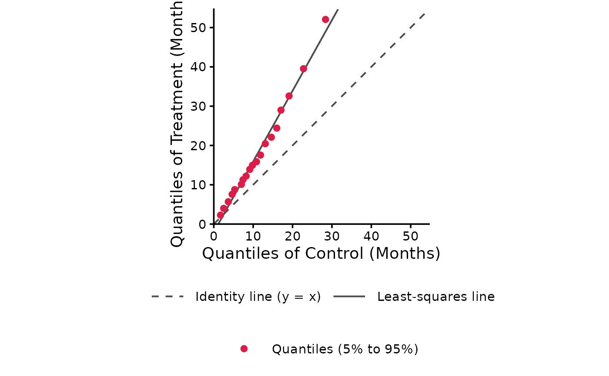

For each arm other than the control arm, plots the quantiles of the
survival time of the arm against those of the control arm, both from the
Kaplan-Meier estimates (quantile() of survival::survfit()),
with the identity line (dashed) and the least-squares line through the
points (solid). Points on a straight line through the origin indicate
that the survival times of the arm are a multiple of those of the control
arm (an accelerated failure time effect); points on the identity line
indicate no difference. The axes go from 0 to the largest quantile,
with the same scale on both axes.
Arguments
- data
Data frame returned by
processing_dataset, with two or more treatment arms.- probs
Probabilities of the quantiles, numbers in (0, 1). The default is
seq(0.05, 0.95, by = 0.05). Quantiles that are not reached by a Kaplan-Meier curve are left out.- time_unit
Time unit of the data:
"months"(the default),"days","weeks"or"years".- legend_position
Position of the legend:
"bottom"(the default),"right","top","left"or"none".- colours
NULL(the default) or colours of the elements of the plot:"identity"(identity line, dark grey),"least_squares"(least-squares line, dark grey) and"quantiles"(points, red). A named vector sets the colours of the elements it names; an unnamed vector gives the three colours in this order.- linetypes
NULL(the default) or line types of"identity"(dashed) and"least_squares"(solid), given as forcolours(seeplot_kmfor the line types).- text_sizes
NULL(the default) or a named vector of font sizes in points, with some or all of the names"title"(titles of the plot and of its panels),"axis_title","axis_text","legend"and"risk_table"(numbers at risk and names of the arms below the plot; the title of the table is 1.125 times as large). The texts not named keep their default sizes: 14 points for the axis titles, 16.8 for the title of a plot, and 11.2 for the titles of panels, the axis text, the legend and the numbers at risk.
Examples
dat <- processing_dataset(
system.file("extdata", "fit_example.csv", package = "SurvFitSummary"),
column_arm = "TRT01P", column_survtime = "AVAL", column_cnsr = "CNSR",
control_arm = "Control"
)
plot_qq_survival(dat)
